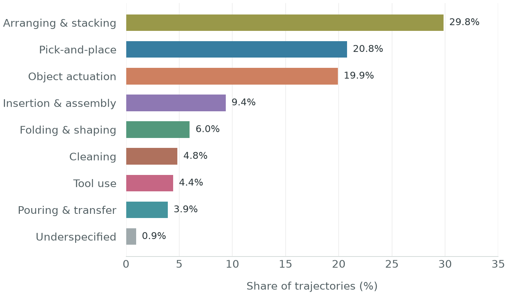
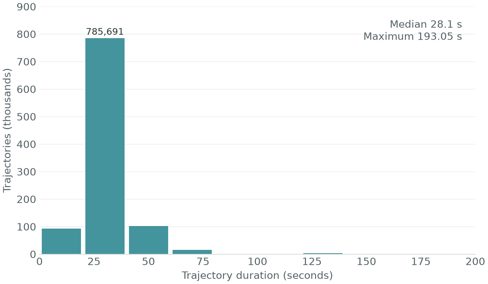
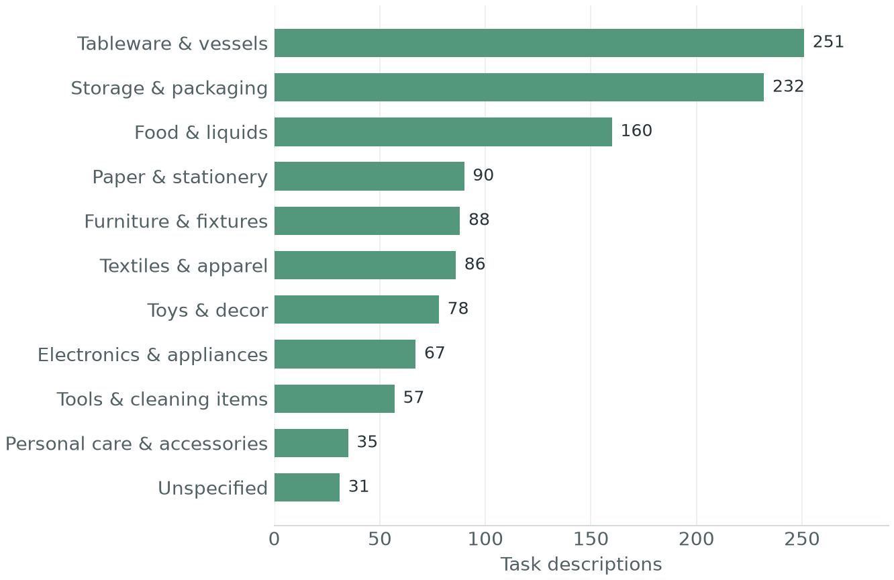
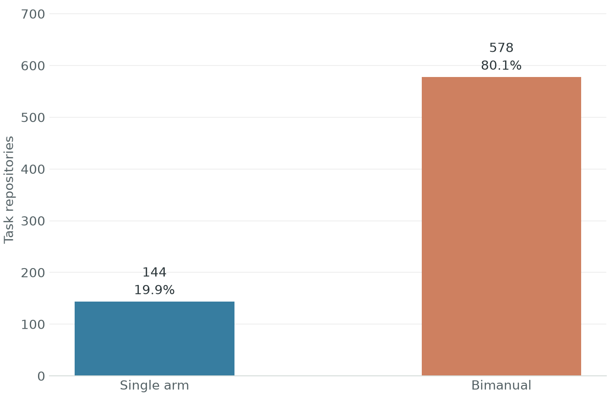
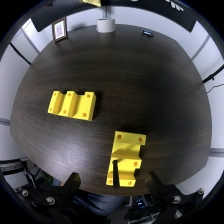
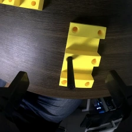
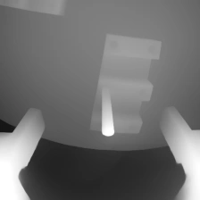
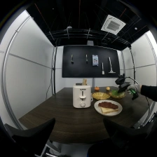
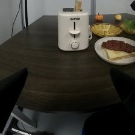
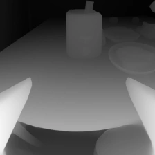

Anonymous supplementary material
AWARE-VLA
Geometry-Grounded Anticipatory World-Action Representations
from Large-Scale UMI Pretraining
01 / In the real world
Manipulation in motion.
From precise insertion to coordinated bimanual tasks.
02 / The data behind the policy
A world of everyday interactions.
UMI demonstrations across kitchens, offices, storage areas, and light-industrial workstations.
- Hours of interaction
- 10,050h
- Demonstration trajectories
- 1,000,654
- Task repositories
- 722
- Recording frequency
- 20Hz
Task diversity
Eight families of everyday manipulation.
Food, containers, textiles, tools, electronics, and everyday objects.
Behavioral breadth
Trajectory share by primary manipulation category.

Temporal variety
Trajectory duration at 20 Hz; 20-second bins.

3,788 trajectories extend beyond two minutes.
Skills meet objects
Task-description coverage across object categories. Each instruction can involve multiple object types.
Everyday object diversity
Task descriptions involving each object category; categories can overlap.

Single-arm & bimanual
Demonstrations across two manipulation configurations.

Visual & geometric evidence
From scene context
to interaction detail.
Wide-field RGB preserves the scene. Interaction-centered views retain local detail, while estimated depth supplies complementary geometric evidence.





